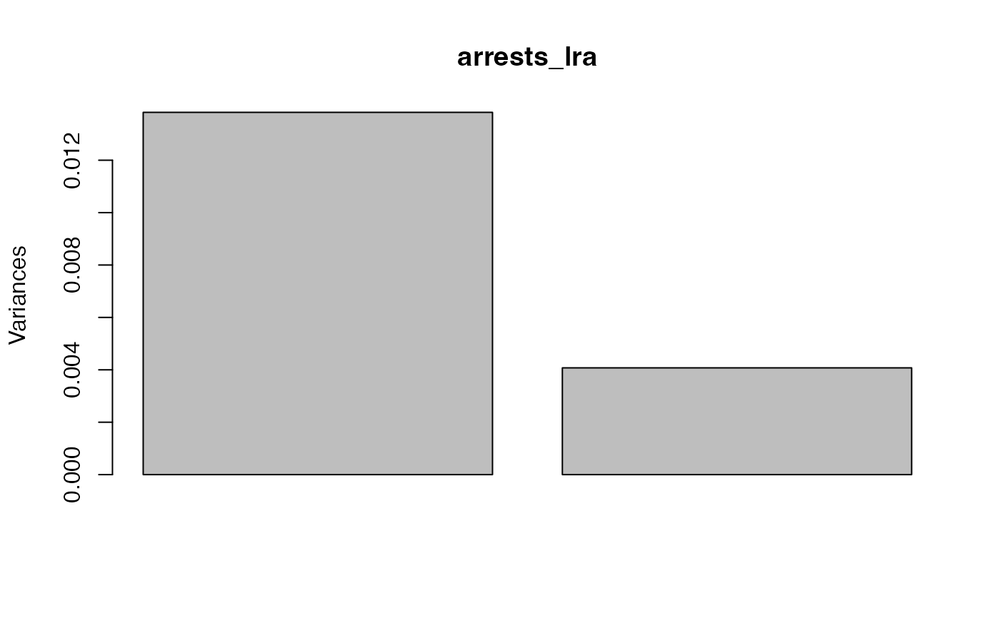

Log-ratio analysis
lra-ord.RdRepresent log-ratios between variables based on their values on a population of cases.
lra(x, compositional = FALSE, weighted = TRUE)Arguments
- x
A numeric matrix or rectangular data set.
- compositional
Logical; whether to normalize rows of
xto sum to 1.- weighted
Logical; whether to weight rows and columns by their sums.
Value
Given an \(n * p\) data matrix and setting \(r=min(n,p)\),
lra() returns a list of class "lra" containing three elements:
svThe \(r-1\) singular values
row.coordsThe \(n * (r-1)\) matrix of row standard coordinates.
column.coordsThe \(p * (r-1)\) matrix of column standard coordinates.
Details
Log-ratio analysis (LRA) is based on a double-centering of log-transformed data, usually weighted by row and column totals. The technique is suitable for positive-valued variables on a common scale (e.g. percentages). The distances between variables' coordinates (in the full-dimensional space) are their pairwise log-ratios. The distances between cases' coordinates are called their log-ratio distances, and the total variance is the weighted sum of their squares.
LRA is not implemented in standard R distributions but is a useful member of the ordination toolkit. This is a minimal implementation following Greenacre's (2010) exposition in Chapter 7.
References
Greenacre MJ (2010) Biplots in Practice. Fundacion BBVA, ISBN: 978-84-923846. https://www.fbbva.es/microsite/multivariate-statistics/biplots.html
Examples
# U.S. 1973 violent crime arrests
head(USArrests)
#> Murder Assault UrbanPop Rape
#> Alabama 13.2 236 58 21.2
#> Alaska 10.0 263 48 44.5
#> Arizona 8.1 294 80 31.0
#> Arkansas 8.8 190 50 19.5
#> California 9.0 276 91 40.6
#> Colorado 7.9 204 78 38.7
# row and column subsets
state_examples <- c("Hawaii", "Mississippi", "North Dakota")
arrests <- c(1L, 2L, 4L)
# pairwise log-ratios of violent crime arrests for two states
arrest_pairs <- combn(arrests, 2L)
arrest_ratios <-
USArrests[, arrest_pairs[1L, ]] / USArrests[, arrest_pairs[2L, ]]
colnames(arrest_ratios) <- paste(
colnames(USArrests)[arrest_pairs[1L, ]], "/",
colnames(USArrests)[arrest_pairs[2L, ]], sep = ""
)
arrest_logratios <- log(arrest_ratios)
arrest_logratios[state_examples, ]
#> Murder/Assault Murder/Rape Assault/Rape
#> Hawaii -2.160935 -1.33797578 0.8229588
#> Mississippi -2.778009 -0.06025919 2.7177496
#> North Dakota -4.029806 -2.21101790 1.8187881
# non-compositional log-ratio analysis
(arrests_lra <- lra(USArrests[, c(1, 2, 4)]))
#> $sv
#> [1] 0.11758785 0.06383505
#>
#> $row.coords
#> LRSV1 LRSV2
#> Alabama -0.68001198 0.929601139
#> Alaska 0.92998988 -0.624577164
#> Arizona -0.32984955 -1.311581695
#> Arkansas -0.35134428 0.277323143
#> California 0.55165901 -1.004280086
#> Colorado 1.22910659 -0.638846890
#> Connecticut -0.43610804 -1.027017532
#> Delaware -1.54269183 -1.349322890
#> Florida -0.54682514 0.300298438
#> Georgia 0.15812112 1.916932033
#> Hawaii 3.51365819 2.150284964
#> Idaho -0.05250833 -2.109188891
#> Illinois -0.52429773 0.002652531
#> Indiana 1.22231804 0.881075829
#> Iowa 1.39095549 -0.632985189
#> Kansas 0.75715595 0.380674137
#> Kentucky 0.68864901 2.024832534
#> Louisiana -0.69015525 1.238509473
#> Maine -0.63716612 -1.499305459
#> Maryland -0.63629812 -0.286175559
#> Massachusetts -0.22762978 -1.124006923
#> Michigan 0.41414730 0.171745261
#> Minnesota 1.45222388 -0.789191960
#> Mississippi -1.47068651 1.436924829
#> Missouri 0.78566710 0.278289912
#> Montana 0.65946921 0.566956397
#> Nebraska 0.82281297 -0.284750183
#> Nevada 1.14994121 0.060475841
#> New Hampshire 0.88778358 -0.710870888
#> New Jersey 0.01717089 0.205735676
#> New Mexico -0.12336523 -0.223126918
#> New York -0.35365080 0.100656157
#> North Carolina -2.35659680 0.189728037
#> North Dakota 0.74912231 -2.900272794
#> Ohio 1.11076020 0.766013515
#> Oklahoma 0.30637650 -0.053491161
#> Oregon 1.13217636 -1.312593507
#> Pennsylvania 0.48983869 0.840580871
#> Rhode Island -2.42442178 -1.868251942
#> South Carolina -0.96800438 0.752042083
#> South Dakota 0.61067278 -0.091684230
#> Tennessee 0.55166149 1.334277800
#> Texas 0.22895595 1.088292623
#> Utah 1.20949943 -1.771844197
#> Vermont 1.78310111 -0.254863377
#> Virginia 0.33180838 0.612645656
#> Washington 1.07067103 -1.635935144
#> West Virginia -0.02043499 1.475198849
#> Wisconsin 1.43728882 0.033416687
#> Wyoming -0.50955934 0.033243165
#>
#> $column.coords
#> LRSV1 LRSV2
#> Murder 0.283086 4.9570302
#> Assault -0.370595 -0.1805698
#> Rape 2.876702 -0.3660163
#>
#> attr(,"class")
#> [1] "lra"
(arrests_lra_ord <- augment_ord(as_tbl_ord(arrests_lra)))
#> # A tbl_ord of class 'lra': (50 x 2) x (3 x 2)'
#> # 2 coordinates: LRSV1 and LRSV2
#> #
#> # Rows (standard): [ 50 x 2 | 1 ]
#> LRSV1 LRSV2 | .name
#> | <chr>
#> 1 -0.680 0.930 | 1 Alabama
#> 2 0.930 -0.625 | 2 Alaska
#> 3 -0.330 -1.31 | 3 Arizona
#> 4 -0.351 0.277 | 4 Arkansas
#> 5 0.552 -1.00 | 5 California
#> # … with 45 more rows
#> #
#> # Columns (standard): [ 3 x 2 | 1 ]
#> LRSV1 LRSV2 | .name
#> | <chr>
#> 1 0.283 4.96 | 1 Murder
#> 2 -0.371 -0.181 | 2 Assault
#> 3 2.88 -0.366 | 3 Rape
# state abbreviations
state_abbr <- data.frame(state = state.name, abbr = state.abb)
# row-principal biplot
arrests_lra_ord %>%
left_join_rows(state_abbr, by = c(".name" = "state")) %>%
confer_inertia("rows") %>%
ggbiplot(aes(color = .matrix), sec.axes = "cols", scale.factor = 1/20) +
scale_color_manual(values = c("tomato4", "turquoise4")) +
theme_bw() +
geom_rows_text(aes(label = abbr), size = 3, alpha = .75) +
geom_cols_polygon(fill = NA, linetype = "dashed") +
geom_cols_text(aes(label = .name), fontface = "bold") +
ggtitle(
"Non-compositional LRA of violent crime arrest rates",
"United States, 1973"
) +
expand_limits(x = c(-.35)) +
guides(color = FALSE)
#> Warning: `guides(<scale> = FALSE)` is deprecated. Please use `guides(<scale> = "none")` instead.

# compositional log-ratio analysis
(arrests_lra <- lra(USArrests[, c(1, 2, 4)], compositional = TRUE))
#> $sv
#> [1] 0.12786989 0.07009419
#>
#> $row.coords
#> LRSV1 LRSV2
#> Alabama -0.85996613 1.026670279
#> Alaska 0.62563906 -0.590884217
#> Arizona -0.59655036 -1.052470224
#> Arkansas -0.56720016 0.392404589
#> California 0.25317611 -0.886874443
#> Colorado 0.91025328 -0.642286195
#> Connecticut -0.68889080 -0.780536684
#> Delaware -1.75358722 -0.930817309
#> Florida -0.75277514 0.438385774
#> Georgia -0.03024834 1.815045714
#> Hawaii 3.17493739 1.595495515
#> Idaho -0.35725728 -1.812040813
#> Illinois -0.74064171 0.165342452
#> Indiana 0.95145506 0.738089068
#> Iowa 1.06468106 -0.657771240
#> Kansas 0.49245529 0.343712889
#> Kentucky 0.47873528 1.844779869
#> Louisiana -0.85994408 1.308343588
#> Maine -0.89531454 -1.183346226
#> Maryland -0.85643832 -0.082404543
#> Massachusetts -0.49325054 -0.895364854
#> Michigan 0.15901105 0.198178949
#> Minnesota 1.11817124 -0.807422510
#> Mississippi -1.59757650 1.588763093
#> Missouri 0.51641555 0.247122543
#> Montana 0.40520128 0.525342558
#> Nebraska 0.53415663 -0.268675329
#> Nevada 0.85674151 0.002605144
#> New Hampshire 0.58270940 -0.663780082
#> New Jersey -0.21824611 0.280059275
#> New Mexico -0.36562969 -0.091116764
#> New York -0.57493934 0.232355716
#> North Carolina -2.48097704 0.570671438
#> North Dakota 0.38189445 -2.633086647
#> Ohio 0.84153026 0.647997376
#> Oklahoma 0.04923980 0.007604921
#> Oregon 0.79674601 -1.241327727
#> Pennsylvania 0.25212343 0.795493375
#> Rhode Island -2.61016221 -1.288460589
#> South Carolina -1.13999534 0.902535839
#> South Dakota 0.33803988 -0.066176031
#> Tennessee 0.32652576 1.235632308
#> Texas 0.01126838 1.053855659
#> Utah 0.85603173 -1.668089580
#> Vermont 1.45026003 -0.364991895
#> Virginia 0.09436962 0.608930598
#> Washington 0.72798930 -1.526890681
#> West Virginia -0.21426910 1.437075512
#> Wisconsin 1.12973852 -0.058891812
#> Wyoming -0.72563639 0.191212352
#>
#> $column.coords
#> LRSV1 LRSV2
#> Murder 0.6072392 4.9382810
#> Assault -0.3999883 -0.1533148
#> Rape 2.7051937 -0.5351457
#>
#> attr(,"class")
#> [1] "lra"
(arrests_lra_ord <- augment_ord(as_tbl_ord(arrests_lra)))
#> # A tbl_ord of class 'lra': (50 x 2) x (3 x 2)'
#> # 2 coordinates: LRSV1 and LRSV2
#> #
#> # Rows (standard): [ 50 x 2 | 1 ]
#> LRSV1 LRSV2 | .name
#> | <chr>
#> 1 -0.860 1.03 | 1 Alabama
#> 2 0.626 -0.591 | 2 Alaska
#> 3 -0.597 -1.05 | 3 Arizona
#> 4 -0.567 0.392 | 4 Arkansas
#> 5 0.253 -0.887 | 5 California
#> # … with 45 more rows
#> #
#> # Columns (standard): [ 3 x 2 | 1 ]
#> LRSV1 LRSV2 | .name
#> | <chr>
#> 1 0.607 4.94 | 1 Murder
#> 2 -0.400 -0.153 | 2 Assault
#> 3 2.71 -0.535 | 3 Rape
# row-principal biplot
arrests_lra_ord %>%
left_join_rows(state_abbr, by = c(".name" = "state")) %>%
confer_inertia("rows") %>%
ggbiplot(aes(color = .matrix), sec.axes = "cols", scale.factor = 1/20) +
scale_color_manual(values = c("tomato4", "turquoise4")) +
theme_bw() +
geom_rows_text(aes(label = abbr), size = 3, alpha = .75) +
geom_cols_polygon(fill = NA, linetype = "dashed") +
geom_cols_text(aes(label = .name), fontface = "bold") +
ggtitle(
"Compositional LRA of violent crime arrest rates",
"United States, 1973"
) +
expand_limits(x = c(-.4)) +
guides(color = FALSE)
#> Warning: `guides(<scale> = FALSE)` is deprecated. Please use `guides(<scale> = "none")` instead.